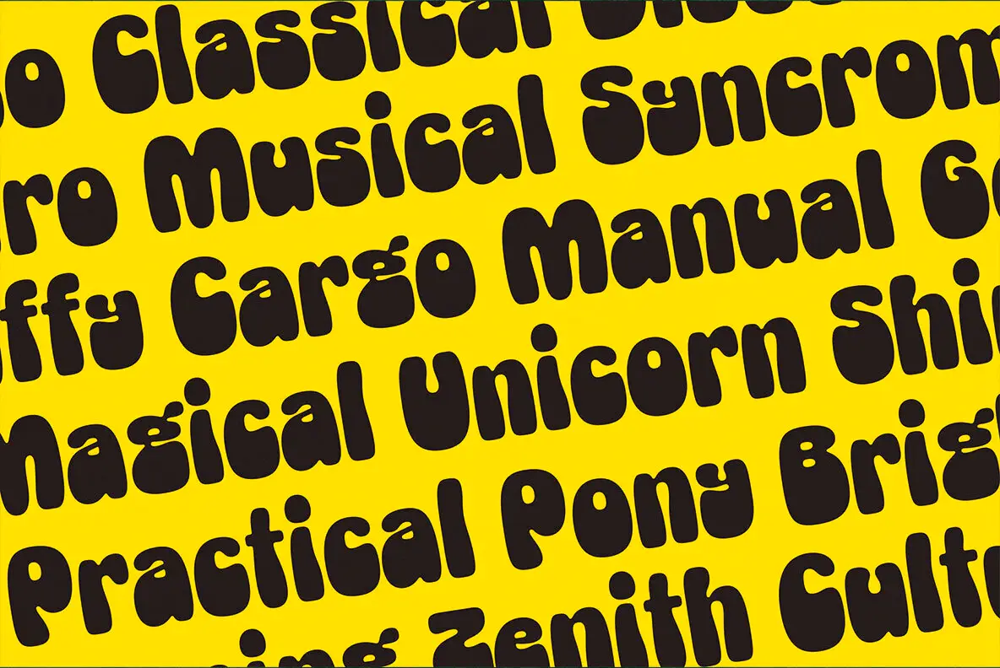

The oversized rounded words fill the yellow field in parallel diagonal rows. Keep the lettering heavy and close, while leaving enough room between words and rows for every phrase to read.
A full-bleed yellow type specimen with readable row spacing, an adjustable tilt, and controlled edge crops.

The oversized rounded words fill the yellow field in parallel diagonal rows. Keep the lettering heavy and close, while leaving enough room between words and rows for every phrase to read.